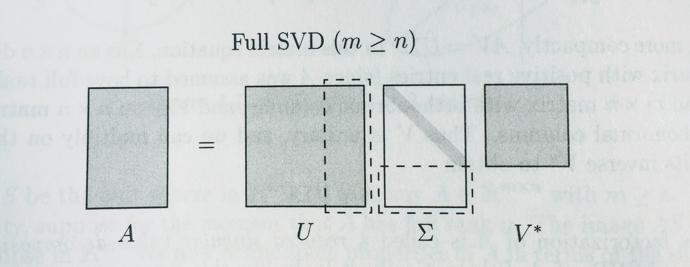
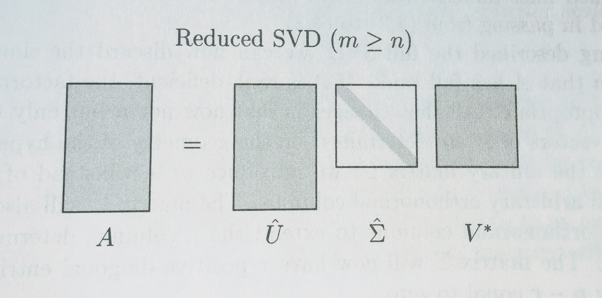
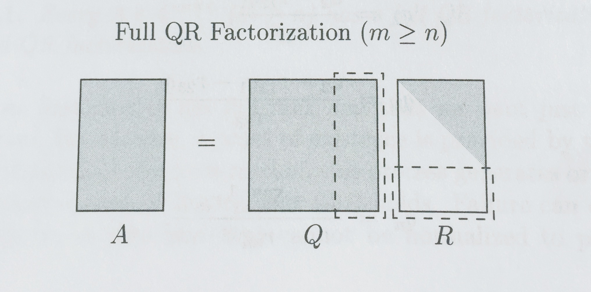
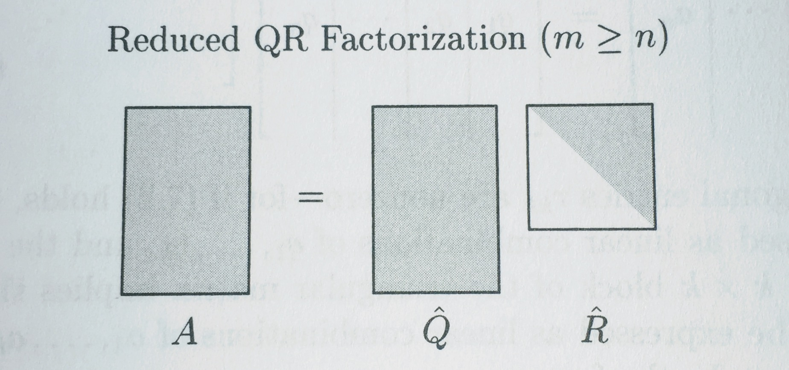
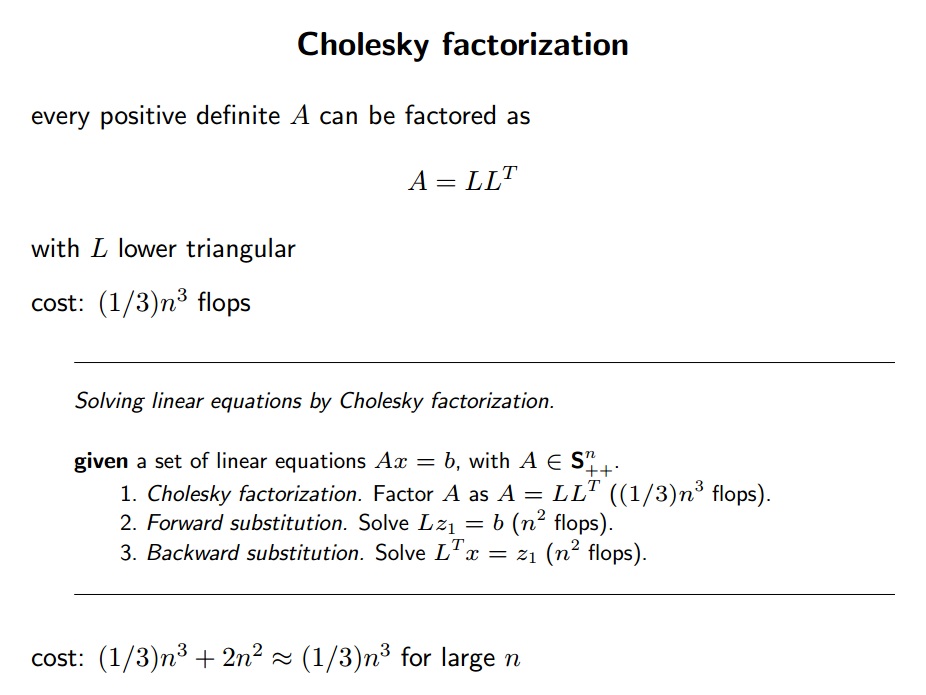

from sklearn import datasets, linear_model, metrics
from sklearn.model_selection import train_test_split
from sklearn.preprocessing import PolynomialFeatures
import math, scipy, numpy as np
from scipy import linalg6. How to Implement Linear Regression
You can read an overview of this Numerical Linear Algebra course in this blog post. The course was originally taught in the University of San Francisco MS in Analytics graduate program. Course lecture videos are available on YouTube (note that the notebook numbers and video numbers do not line up, since some notebooks took longer than 1 video to cover).
You can ask questions about the course on our fast.ai forums.
In the previous lesson, we calculated the least squares linear regression for a diabetes dataset, using scikit learn’s implementation. Today, we will look at how we could write our own implementation.
np.set_printoptions(precision=6)data = datasets.load_diabetes()feature_names=['age', 'sex', 'bmi', 'bp', 's1', 's2', 's3', 's4', 's5', 's6']trn,test,y_trn,y_test = train_test_split(data.data, data.target, test_size=0.2)trn.shape, test.shape((353, 10), (89, 10))def regr_metrics(act, pred):
return (math.sqrt(metrics.mean_squared_error(act, pred)),
metrics.mean_absolute_error(act, pred))How did sklearn do it?
How is sklearn doing this? By checking the source code, you can see that in the dense case, it calls scipy.linalg.lstqr, which is calling a LAPACK method:
Options are ``'gelsd'``, ``'gelsy'``, ``'gelss'``. Default
(``'gelsd'``) is a good choice. However, ``'gelsy'`` can be slightly
faster on many problems. ``'gelss'`` was used historically. It is
generally slow but uses less memory.Scipy Sparse Least Squares
We will not get into too much detail about the sparse version of least squares. Here is a bit of info if you are interested:
Scipy sparse lsqr uses an iterative method called Golub and Kahan bidiagonalization.
from scipy sparse lsqr source code: Preconditioning is another way to reduce the number of iterations. If it is possible to solve a related system M*x = b efficiently, where M approximates A in some helpful way (e.g. M - A has low rank or its elements are small relative to those of A), LSQR may converge more rapidly on the system A*M(inverse)*z = b, after which x can be recovered by solving M*x = z.
If A is symmetric, LSQR should not be used! Alternatives are the symmetric conjugate-gradient method (cg) and/or SYMMLQ. SYMMLQ is an implementation of symmetric cg that applies to any symmetric A and will converge more rapidly than LSQR. If A is positive definite, there are other implementations of symmetric cg that require slightly less work per iteration than SYMMLQ (but will take the same number of iterations).
linalg.lstqr
The sklearn implementation handled adding a constant term (since the y-intercept is presumably not 0 for the line we are learning) for us. We will need to do that by hand now:
trn_int = np.c_[trn, np.ones(trn.shape[0])]
test_int = np.c_[test, np.ones(test.shape[0])]Since linalg.lstsq lets us specify which LAPACK routine we want to use, lets try them all and do some timing comparisons:
290 µs ± 9.24 µs per loop (mean ± std. dev. of 7 runs, 1000 loops each)140 µs ± 91.7 ns per loop (mean ± std. dev. of 7 runs, 10000 loops each)199 µs ± 228 ns per loop (mean ± std. dev. of 7 runs, 1000 loops each)Naive Solution
Recall that we want to find \(\hat{x}\) that minimizes: \[ \big\vert\big\vert Ax - b \big\vert\big\vert_2\]
Another way to think about this is that we are interested in where vector \(b\) is closest to the subspace spanned by \(A\) (called the range of \(A\)). This is the projection of \(b\) onto \(A\). Since \(b - A\hat{x}\) must be perpendicular to the subspace spanned by \(A\), we see that
\[A^T (b - A\hat{x}) = 0 \]
(we are using \(A^T\) because we want to multiply each column of \(A\) by \(b - A\hat{x}\)
This leads us to the normal equations: \[ x = (A^TA)^{-1}A^T b \]
def ls_naive(A, b):
return np.linalg.inv(A.T @ A) @ A.T @ b45.8 µs ± 4.65 µs per loop (mean ± std. dev. of 7 runs, 10000 loops each)coeffs_naive = ls_naive(trn_int, y_trn)
regr_metrics(y_test, test_int @ coeffs_naive)(57.94102134545707, 48.053565198516438)Normal Equations (Cholesky)
Normal equations: \[ A^TA x = A^T b \]
If \(A\) has full rank, the pseudo-inverse \((A^TA)^{-1}A^T\) is a square, hermitian positive definite matrix. The standard way of solving such a system is Cholesky Factorization, which finds upper-triangular R s.t. \(A^TA = R^TR\).
The following steps are based on Algorithm 11.1 from Trefethen:
A = trn_intb = y_trnAtA = A.T @ A
Atb = A.T @ bWarning: Numpy and Scipy default to different upper/lower for Cholesky
R = scipy.linalg.cholesky(AtA)np.set_printoptions(suppress=True, precision=4)
Rarray([[ 0.9124, 0.1438, 0.1511, 0.3002, 0.2228, 0.188 ,
-0.051 , 0.1746, 0.22 , 0.2768, -0.2583],
[ 0. , 0.8832, 0.0507, 0.1826, -0.0251, 0.0928,
-0.3842, 0.2999, 0.0911, 0.15 , 0.4393],
[ 0. , 0. , 0.8672, 0.2845, 0.2096, 0.2153,
-0.2695, 0.3181, 0.3387, 0.2894, -0.005 ],
[ 0. , 0. , 0. , 0.7678, 0.0762, -0.0077,
0.0383, 0.0014, 0.165 , 0.166 , 0.0234],
[ 0. , 0. , 0. , 0. , 0.8288, 0.7381,
0.1145, 0.4067, 0.3494, 0.158 , -0.2826],
[ 0. , 0. , 0. , 0. , 0. , 0.3735,
-0.3891, 0.2492, -0.3245, -0.0323, -0.1137],
[ 0. , 0. , 0. , 0. , 0. , 0. ,
0.6406, -0.511 , -0.5234, -0.172 , -0.9392],
[ 0. , 0. , 0. , 0. , 0. , 0. ,
0. , 0.2887, -0.0267, -0.0062, 0.0643],
[ 0. , 0. , 0. , 0. , 0. , 0. ,
0. , 0. , 0.2823, 0.0636, 0.9355],
[ 0. , 0. , 0. , 0. , 0. , 0. ,
0. , 0. , 0. , 0.7238, 0.0202],
[ 0. , 0. , 0. , 0. , 0. , 0. ,
0. , 0. , 0. , 0. , 18.7319]])check our factorization:
np.linalg.norm(AtA - R.T @ R)4.5140158187158533e-16\[ A^T A x = A^T b \] \[ R^T R x = A^T b \] \[ R^T w = A^T b \] \[ R x = w \]
w = scipy.linalg.solve_triangular(R, Atb, lower=False, trans='T')It’s always good to check that our result is what we expect it to be: (in case we entered the wrong params, the function didn’t return what we thought, or sometimes the docs are even outdated)
np.linalg.norm(R.T @ w - Atb)1.1368683772161603e-13coeffs_chol = scipy.linalg.solve_triangular(R, w, lower=False)np.linalg.norm(R @ coeffs_chol - w)6.861429794408013e-14def ls_chol(A, b):
R = scipy.linalg.cholesky(A.T @ A)
w = scipy.linalg.solve_triangular(R, A.T @ b, trans='T')
return scipy.linalg.solve_triangular(R, w)111 µs ± 272 ns per loop (mean ± std. dev. of 7 runs, 10000 loops each)coeffs_chol = ls_chol(trn_int, y_trn)
regr_metrics(y_test, test_int @ coeffs_chol)(57.9410213454571, 48.053565198516438)QR Factorization
\[ A x = b \] \[ A = Q R \] \[ Q R x = b \]
\[ R x = Q^T b \]
def ls_qr(A,b):
Q, R = scipy.linalg.qr(A, mode='economic')
return scipy.linalg.solve_triangular(R, Q.T @ b)205 µs ± 264 ns per loop (mean ± std. dev. of 7 runs, 1000 loops each)coeffs_qr = ls_qr(trn_int, y_trn)
regr_metrics(y_test, test_int @ coeffs_qr)(57.94102134545711, 48.053565198516452)SVD
\[ A x = b \]
\[ A = U \Sigma V \]
\[ \Sigma V x = U^T b \]
\[ \Sigma w = U^T b \]
\[ x = V^T w \]
SVD gives the pseudo-inverse
def ls_svd(A,b):
m, n = A.shape
U, sigma, Vh = scipy.linalg.svd(A, full_matrices=False, lapack_driver='gesdd')
w = (U.T @ b)/ sigma
return Vh.T @ w1.11 ms ± 320 ns per loop (mean ± std. dev. of 7 runs, 1000 loops each)266 µs ± 8.49 µs per loop (mean ± std. dev. of 7 runs, 1000 loops each)coeffs_svd = ls_svd(trn_int, y_trn)
regr_metrics(y_test, test_int @ coeffs_svd)(57.941021345457244, 48.053565198516687)Random Sketching Technique for Least Squares Regression
Linear Sketching (Woodruff)
- Sample a r x n random matrix S, r << n
- Compute S A and S b
- Find exact solution x to regression SA x = Sb
Timing Comparison
import timeit
import pandas as pddef scipylstq(A, b):
return scipy.linalg.lstsq(A,b)[0]row_names = ['Normal Eqns- Naive',
'Normal Eqns- Cholesky',
'QR Factorization',
'SVD',
'Scipy lstsq']
name2func = {'Normal Eqns- Naive': 'ls_naive',
'Normal Eqns- Cholesky': 'ls_chol',
'QR Factorization': 'ls_qr',
'SVD': 'ls_svd',
'Scipy lstsq': 'scipylstq'}m_array = np.array([100, 1000, 10000])
n_array = np.array([20, 100, 1000])index = pd.MultiIndex.from_product([m_array, n_array], names=['# rows', '# cols'])pd.options.display.float_format = '{:,.6f}'.format
df = pd.DataFrame(index=row_names, columns=index)
df_error = pd.DataFrame(index=row_names, columns=index)# %%prun
for m in m_array:
for n in n_array:
if m >= n:
x = np.random.uniform(-10,10,n)
A = np.random.uniform(-40,40,[m,n]) # removed np.asfortranarray
b = np.matmul(A, x) + np.random.normal(0,2,m)
for name in row_names:
fcn = name2func[name]
t = timeit.timeit(fcn + '(A,b)', number=5, globals=globals())
df.set_value(name, (m,n), t)
coeffs = locals()[fcn](A, b)
reg_met = regr_metrics(b, A @ coeffs)
df_error.set_value(name, (m,n), reg_met[0])df| # rows | 100 | 1000 | 10000 | ||||||
|---|---|---|---|---|---|---|---|---|---|
| # cols | 20 | 100 | 1000 | 20 | 100 | 1000 | 20 | 100 | 1000 |
| Normal Eqns- Naive | 0.001276 | 0.003634 | NaN | 0.000960 | 0.005172 | 0.293126 | 0.002226 | 0.021248 | 1.164655 |
| Normal Eqns- Cholesky | 0.001660 | 0.003958 | NaN | 0.001665 | 0.004007 | 0.093696 | 0.001928 | 0.010456 | 0.399464 |
| QR Factorization | 0.002174 | 0.006486 | NaN | 0.004235 | 0.017773 | 0.213232 | 0.019229 | 0.116122 | 2.208129 |
| SVD | 0.003880 | 0.021737 | NaN | 0.004672 | 0.026950 | 1.280490 | 0.018138 | 0.130652 | 3.433003 |
| Scipy lstsq | 0.004338 | 0.020198 | NaN | 0.004320 | 0.021199 | 1.083804 | 0.012200 | 0.088467 | 2.134780 |
df_error| # rows | 100 | 1000 | 10000 | ||||||
|---|---|---|---|---|---|---|---|---|---|
| # cols | 20 | 100 | 1000 | 20 | 100 | 1000 | 20 | 100 | 1000 |
| Normal Eqns- Naive | 1.702742 | 0.000000 | NaN | 1.970767 | 1.904873 | 0.000000 | 1.978383 | 1.980449 | 1.884440 |
| Normal Eqns- Cholesky | 1.702742 | 0.000000 | NaN | 1.970767 | 1.904873 | 0.000000 | 1.978383 | 1.980449 | 1.884440 |
| QR Factorization | 1.702742 | 0.000000 | NaN | 1.970767 | 1.904873 | 0.000000 | 1.978383 | 1.980449 | 1.884440 |
| SVD | 1.702742 | 0.000000 | NaN | 1.970767 | 1.904873 | 0.000000 | 1.978383 | 1.980449 | 1.884440 |
| Scipy lstsq | 1.702742 | 0.000000 | NaN | 1.970767 | 1.904873 | 0.000000 | 1.978383 | 1.980449 | 1.884440 |
store = pd.HDFStore('least_squares_results.h5')store['df'] = dfC:\Users\rache\Anaconda3\lib\site-packages\IPython\core\interactiveshell.py:2881: PerformanceWarning:
your performance may suffer as PyTables will pickle object types that it cannot
map directly to c-types [inferred_type->floating,key->block0_values] [items->[(100, 20), (100, 100), (100, 1000), (1000, 20), (1000, 100), (1000, 1000), (5000, 20), (5000, 100), (5000, 1000)]]
exec(code_obj, self.user_global_ns, self.user_ns)Notes
I used the magick %prun to profile my code.
Alternative: least absolute deviation (L1 regression) - Less sensitive to outliers than least squares. - No closed form solution, but can solve with linear programming
Conditioning & stability
Condition Number
Condition number is a measure of how small changes to the input cause the output to change.
Question: Why do we care about behavior with small changes to the input in numerical linear algebra?
The relative condition number is defined by
\[ \kappa = \sup_{\delta x} \frac{\|\delta f\|}{\| f(x) \|}\bigg/ \frac{\| \delta x \|}{\| x \|} \]
where \(\delta x\) is infinitesimal
According to Trefethen (pg. 91), a problem is well-conditioned if \(\kappa\) is small (e.g. \(1\), \(10\), \(10^2\)) and ill-conditioned if \(\kappa\) is large (e.g. \(10^6\), \(10^{16}\))
Conditioning: perturbation behavior of a mathematical problem (e.g. least squares)
Stability: perturbation behavior of an algorithm used to solve that problem on a computer (e.g. least squares algorithms, householder, back substitution, gaussian elimination)
Conditioning example
The problem of computing eigenvalues of a non-symmetric matrix is often ill-conditioned
A = [[1, 1000], [0, 1]]
B = [[1, 1000], [0.001, 1]]wA, vrA = scipy.linalg.eig(A)
wB, vrB = scipy.linalg.eig(B)wA, wB(array([ 1.+0.j, 1.+0.j]),
array([ 2.00000000e+00+0.j, -2.22044605e-16+0.j]))Condition Number of a Matrix
The product \(\| A\| \|A^{-1} \|\) comes up so often it has its own name: the condition number of \(A\). Note that normally we talk about the conditioning of problems, not matrices.
The condition number of \(A\) relates to: - computing \(b\) given \(A\) and \(x\) in \(Ax = b\) - computing \(x\) given \(A\) and \(b\) in \(Ax = b\)
Loose ends from last time
Full vs Reduced Factorizations
SVD
Diagrams from Trefethen:


QR Factorization exists for ALL matrices
Just like with SVD, there are full and reduced versions of the QR factorization.


Matrix Inversion is Unstable
from scipy.linalg import hilbertn = 14
A = hilbert(n)
x = np.random.uniform(-10,10,n)
b = A @ xA_inv = np.linalg.inv(A)np.linalg.norm(np.eye(n) - A @ A_inv)5.0516495470543212np.linalg.cond(A)2.2271635826494112e+17A @ A_invarray([[ 1. , 0. , -0.0001, 0.0005, -0.0006, 0.0105, -0.0243,
0.1862, -0.6351, 2.2005, -0.8729, 0.8925, -0.0032, -0.0106],
[ 0. , 1. , -0. , 0. , 0.0035, 0.0097, -0.0408,
0.0773, -0.0524, 1.6926, -0.7776, -0.111 , -0.0403, -0.0184],
[ 0. , 0. , 1. , 0.0002, 0.0017, 0.0127, -0.0273,
0. , 0. , 1.4688, -0.5312, 0.2812, 0.0117, 0.0264],
[ 0. , 0. , -0. , 1.0005, 0.0013, 0.0098, -0.0225,
0.1555, -0.0168, 1.1571, -0.9656, -0.0391, 0.018 , -0.0259],
[-0. , 0. , -0. , 0.0007, 1.0001, 0.0154, 0.011 ,
-0.2319, 0.5651, -0.2017, 0.2933, -0.6565, 0.2835, -0.0482],
[ 0. , -0. , 0. , -0.0004, 0.0059, 0.9945, -0.0078,
-0.0018, -0.0066, 1.1839, -0.9919, 0.2144, -0.1866, 0.0187],
[-0. , 0. , -0. , 0.0009, -0.002 , 0.0266, 0.974 ,
-0.146 , 0.1883, -0.2966, 0.4267, -0.8857, 0.2265, -0.0453],
[ 0. , 0. , -0. , 0.0002, 0.0009, 0.0197, -0.0435,
1.1372, -0.0692, 0.7691, -1.233 , 0.1159, -0.1766, -0.0033],
[ 0. , 0. , -0. , 0.0002, 0. , -0.0018, -0.0136,
0.1332, 0.945 , 0.3652, -0.2478, -0.1682, 0.0756, -0.0212],
[ 0. , -0. , -0. , 0.0003, 0.0038, -0.0007, 0.0318,
-0.0738, 0.2245, 1.2023, -0.2623, -0.2783, 0.0486, -0.0093],
[-0. , 0. , -0. , 0.0004, -0.0006, 0.013 , -0.0415,
0.0292, -0.0371, 0.169 , 1.0715, -0.09 , 0.1668, -0.0197],
[ 0. , -0. , 0. , 0. , 0.0016, 0.0062, -0.0504,
0.1476, -0.2341, 0.8454, -0.7907, 1.4812, -0.15 , 0.0186],
[ 0. , -0. , 0. , -0.0001, 0.0022, 0.0034, -0.0296,
0.0944, -0.1833, 0.6901, -0.6526, 0.2556, 0.8563, 0.0128],
[ 0. , 0. , 0. , -0.0001, 0.0018, -0.0041, -0.0057,
-0.0374, -0.165 , 0.3968, -0.2264, -0.1538, -0.0076, 1.005 ]])row_names = ['Normal Eqns- Naive',
'QR Factorization',
'SVD',
'Scipy lstsq']
name2func = {'Normal Eqns- Naive': 'ls_naive',
'QR Factorization': 'ls_qr',
'SVD': 'ls_svd',
'Scipy lstsq': 'scipylstq'}pd.options.display.float_format = '{:,.9f}'.format
df = pd.DataFrame(index=row_names, columns=['Time', 'Error'])for name in row_names:
fcn = name2func[name]
t = timeit.timeit(fcn + '(A,b)', number=5, globals=globals())
coeffs = locals()[fcn](A, b)
df.set_value(name, 'Time', t)
df.set_value(name, 'Error', regr_metrics(b, A @ coeffs)[0])SVD is best here!
DO NOT RERUN
df| Time | Error | |
|---|---|---|
| Normal Eqns- Naive | 0.001334339 | 3.598901966 |
| QR Factorization | 0.002166139 | 0.000000000 |
| SVD | 0.001556937 | 0.000000000 |
| Scipy lstsq | 0.001871590 | 0.000000000 |
df| Time | Error | |
|---|---|---|
| Normal Eqns- Naive | 0.001334339 | 3.598901966 |
| QR Factorization | 0.002166139 | 0.000000000 |
| SVD | 0.001556937 | 0.000000000 |
| Scipy lstsq | 0.001871590 | 0.000000000 |
Another reason not to take inverse
Even if \(A\) is incredibly sparse, \(A^{-1}\) is generally dense. For large matrices, \(A^{-1}\) could be so dense as to not fit in memory.
Runtime
Matrix Inversion: \(2n^3\)
Matrix Multiplication: \(n^3\)
Cholesky: \(\frac{1}{3}n^3\)
QR, Gram Schmidt: \(2mn^2\), \(m\geq n\) (chapter 8 of Trefethen)
QR, Householder: \(2mn^2 - \frac{2}{3}n^3\) (chapter 10 of Trefethen)
Solving a triangular system: \(n^2\)
Why Cholesky Factorization is Fast:
 (source: Stanford Convex Optimization: Numerical Linear Algebra Background Slides)
A Case Where QR is the Best
m=100
n=15
t=np.linspace(0, 1, m)# Vandermonde matrix
A=np.stack([t**i for i in range(n)], 1)b=np.exp(np.sin(4*t))
# This will turn out to normalize the solution to be 1
b /= 2006.787453080206from matplotlib import pyplot as pltplt.plot(t, b)
Check that we get 1:
1 - ls_qr(A, b)[14]1.4137685733217609e-07Bad condition number:
kappa = np.linalg.cond(A); kappa5.827807196683593e+17row_names = ['Normal Eqns- Naive',
'QR Factorization',
'SVD',
'Scipy lstsq']
name2func = {'Normal Eqns- Naive': 'ls_naive',
'QR Factorization': 'ls_qr',
'SVD': 'ls_svd',
'Scipy lstsq': 'scipylstq'}pd.options.display.float_format = '{:,.9f}'.format
df = pd.DataFrame(index=row_names, columns=['Time', 'Error'])for name in row_names:
fcn = name2func[name]
t = timeit.timeit(fcn + '(A,b)', number=5, globals=globals())
coeffs = locals()[fcn](A, b)
df.set_value(name, 'Time', t)
df.set_value(name, 'Error', np.abs(1 - coeffs[-1]))df| Time | Error | |
|---|---|---|
| Normal Eqns- Naive | 0.001565099 | 1.357066025 |
| QR Factorization | 0.002632104 | 0.000000116 |
| SVD | 0.003503785 | 0.000000116 |
| Scipy lstsq | 0.002763502 | 0.000000116 |
The solution for least squares via the normal equations is unstable in general, although stable for problems with small condition numbers.
Low-rank
m = 100
n = 10
x = np.random.uniform(-10,10,n)
A2 = np.random.uniform(-40,40, [m, int(n/2)]) # removed np.asfortranarray
A = np.hstack([A2, A2])A.shape, A2.shape((100, 10), (100, 5))b = A @ x + np.random.normal(0,1,m)row_names = ['Normal Eqns- Naive',
'QR Factorization',
'SVD',
'Scipy lstsq']
name2func = {'Normal Eqns- Naive': 'ls_naive',
'QR Factorization': 'ls_qr',
'SVD': 'ls_svd',
'Scipy lstsq': 'scipylstq'}pd.options.display.float_format = '{:,.9f}'.format
df = pd.DataFrame(index=row_names, columns=['Time', 'Error'])for name in row_names:
fcn = name2func[name]
t = timeit.timeit(fcn + '(A,b)', number=5, globals=globals())
coeffs = locals()[fcn](A, b)
df.set_value(name, 'Time', t)
df.set_value(name, 'Error', regr_metrics(b, A @ coeffs)[0])df| Time | Error | |
|---|---|---|
| Normal Eqns- Naive | 0.001227640 | 300.658979382 |
| QR Factorization | 0.002315920 | 0.876019803 |
| SVD | 0.001745647 | 1.584746056 |
| Scipy lstsq | 0.002067989 | 0.804750398 |
Comparison
Our results from above:
df| # rows | 100 | 1000 | 10000 | ||||||
|---|---|---|---|---|---|---|---|---|---|
| # cols | 20 | 100 | 1000 | 20 | 100 | 1000 | 20 | 100 | 1000 |
| Normal Eqns- Naive | 0.001276 | 0.003634 | NaN | 0.000960 | 0.005172 | 0.293126 | 0.002226 | 0.021248 | 1.164655 |
| Normal Eqns- Cholesky | 0.001660 | 0.003958 | NaN | 0.001665 | 0.004007 | 0.093696 | 0.001928 | 0.010456 | 0.399464 |
| QR Factorization | 0.002174 | 0.006486 | NaN | 0.004235 | 0.017773 | 0.213232 | 0.019229 | 0.116122 | 2.208129 |
| SVD | 0.003880 | 0.021737 | NaN | 0.004672 | 0.026950 | 1.280490 | 0.018138 | 0.130652 | 3.433003 |
| Scipy lstsq | 0.004338 | 0.020198 | NaN | 0.004320 | 0.021199 | 1.083804 | 0.012200 | 0.088467 | 2.134780 |
From Trefethen (page 84):
Normal equations/Cholesky is fastest when it works. Cholesky can only be used on symmetric, positive definite matrices. Also, normal equations/Cholesky is unstable for matrices with high condition numbers or with low-rank.
Linear regression via QR has been recommended by numerical analysts as the standard method for years. It is natural, elegant, and good for “daily use”.